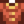

Earth Crystal
| Earth Crystal | |
| A resinous substance found near the surface. | |
| Information | |
| Source | |
| Sell Price | |
An Earth Crystal is a type of Mineral. It can be foraged in The Mines (especially floors 1 - 39), or obtained from Geodes and Omni Geodes, dropped from Duggies in the Mines (floors 1 - 29), dropped from Haunted Skulls, or from panning. It can also be found in Fishing Treasure Chests.
Wilderness Golems and Iridium Golems on the Wilderness Farm map have a 0.5% chance of dropping an Earth Crystal when slain.
Earth Crystals can be destroyed by bombs.
Gifting
| Villager Reactions
| |
|---|---|
| Like | |
| Dislike | |
Bundles
Earth Crystal is used in the  Geologist's Bundle in the Boiler Room.
Geologist's Bundle in the Boiler Room.
Recipes
| Image | Name | Description | Ingredients | Recipe Source |
|---|---|---|---|---|
| Mayonnaise Machine | Turns eggs into mayonnaise. |
Buildings
Earth Crystal is required to purchase the Earth Obelisk from the Wizard's Tower.
| Image | Name | Description | Cost | Size |
|---|---|---|---|---|
| Earth Obelisk | Warps you to the mountains. | 3x2 |
Tailoring
Earth Crystal is used in the spool of the Sewing Machine to create a Shirt.  It can be used in dyeing, serving as an orange dye at the dye pots, located in Emily's and Haley's house, 2 Willow Lane.
Quests
- Earth Crystal may be randomly requested during any season at the "Help Wanted" board outside Pierre's General Store for a reward of
 150g and 150 Friendship points.
150g and 150 Friendship points. - 5 Earth Crystal are requested by Stonefish in a Fish Pond quest to increase the capacity of the pond from 3 to 5.
- 1-2 Earth Crystal may be requested by Bullhead, Catfish, Largemouth Bass, or Midnight Carp in a Fish Pond quest to increase the capacity of the pond from 5 to 7.
History
- 1.1: Used as a building material to the Earth Obelisk.
- 1.3.27: Can be found in Omni Geodes.
- 1.4: Sturdy Ring does not use Earth Crystal to craft anymore. Can now be used in Tailoring. Can be requested in Fish Pond quests.
- 1.6: Can be obtained from Iridium Golems.
| Minerals | |
|---|---|
| Foraged Minerals | Earth Crystal • Fire Quartz • Frozen Tear • Quartz |
| Gems | Amethyst • Aquamarine • Diamond • Emerald • Jade • Prismatic Shard • Ruby • Topaz |
| Geode Minerals | Aerinite • Alamite • Baryte • Basalt • Bixite • Calcite • Celestine • Dolomite • Esperite • Fairy Stone • Fire Opal • Fluorapatite • Geminite • Ghost Crystal • Granite • Helvite • Hematite • Jagoite • Jamborite • Jasper • Kyanite • Lemon Stone • Limestone • Lunarite • Malachite • Marble • Mudstone • Nekoite • Neptunite • Obsidian • Ocean Stone • Opal • Orpiment • Petrified Slime • Pyrite • Sandstone • Slate • Soapstone • Star Shards • Thunder Egg • Tigerseye |
| Geodes | Geode • Frozen Geode • Magma Geode • Omni Geode |